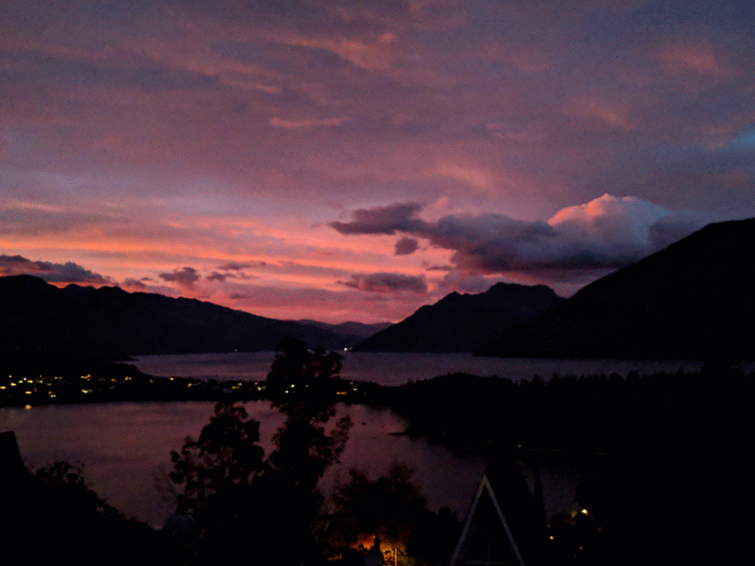

travelingmaterials
travelingmaterials
New Zealand Day 2
Mon 19 March 2018That Sunrise, Man
I woke up at 6:30 am because that's the normally when I wake up and apparently I am a perfectly calibrated clock with no jet lag. This was just in time to get blown away by the ludicrous sunrise that was happening just outside the AirBNB.

We sat out on the patio and slowly ate our breakfast while watching the colors slowly change. The people from the other nearby units also started making their way out onto the patio to see the show. It was a wonderful way to start the day.
As the sun finally started to peak out from behind the mountains the rain kicked up. We went inside to repack our bags and then drove up to Queenstown Hill to go for a quick hike.
The Queenstown Hill hike is a very pleasant activity for an intermittently rainy day. Much of the hike is very shaded and provides some moderate shelter from the rain, there are fun informational signs, and you get a great view from the top if the conditions permit. The signs explain that this hill is sacred to the Maori and discuss the history of the region and the ongoing conservation efforts in the area. For example, see the dead trees in the background of these photographs? Those are called Wildings, they're an invasive species, and they are being killed off on purpose. You're encouraged to just pull the seedlings out of the ground if you see one near the path.

We then got brunch at Joe's Garage in Queentown and took the mildly windy road out to Te Anau.